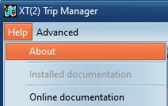
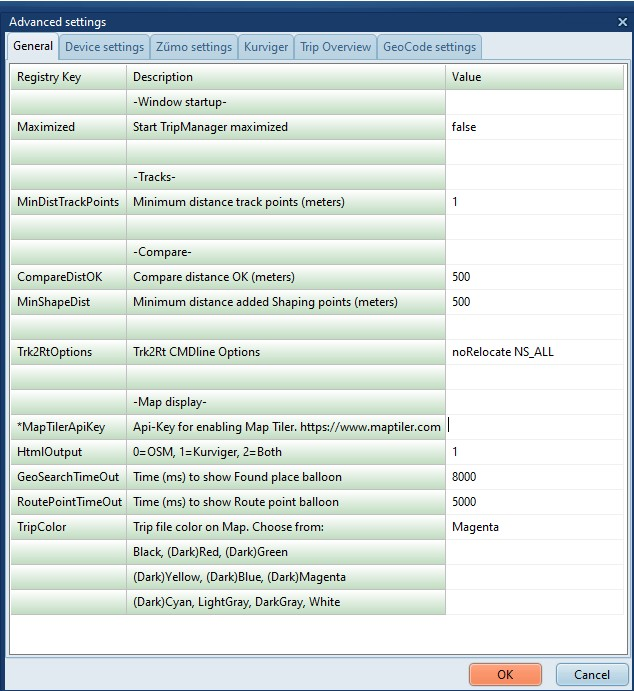

| Previous Next |
Overview |
|
|
|
Help/About
Shows the Version.
Help/documentation
Opens a link to the Installed documentation (if selected during install)
Opens a link to the Online documentation
|

|
|
Advanced/Settings
Opens a dialog where you can view/edit
TripManager settings.
|

|